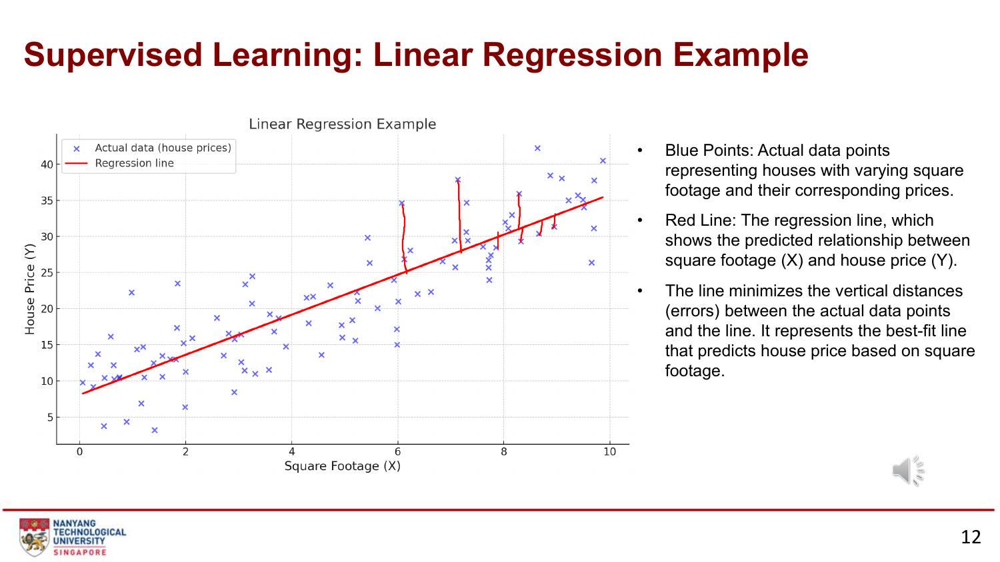
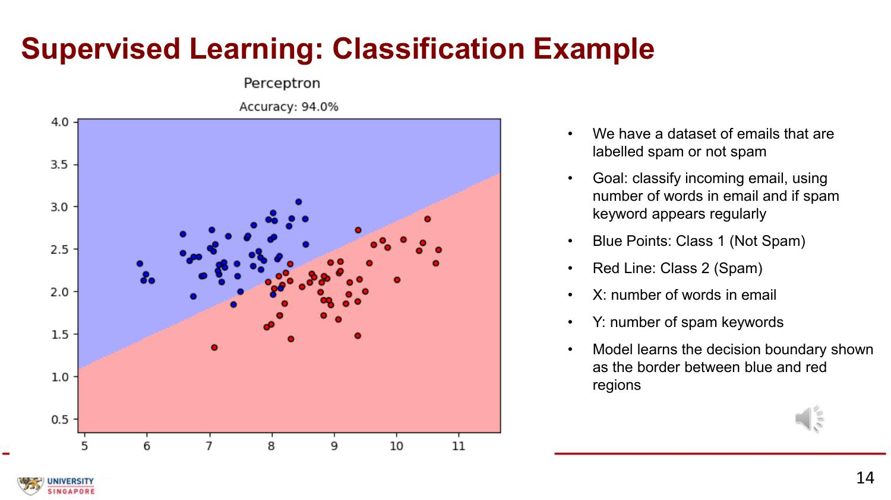
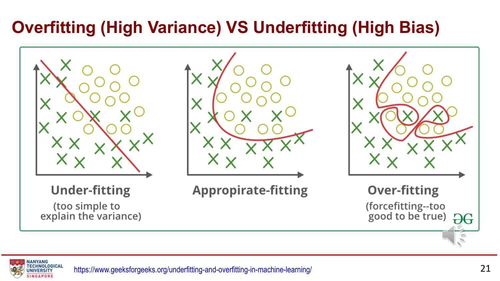
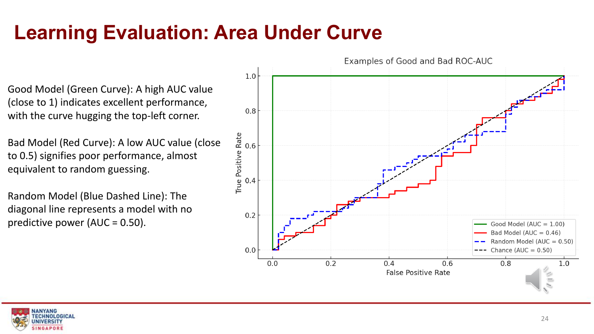
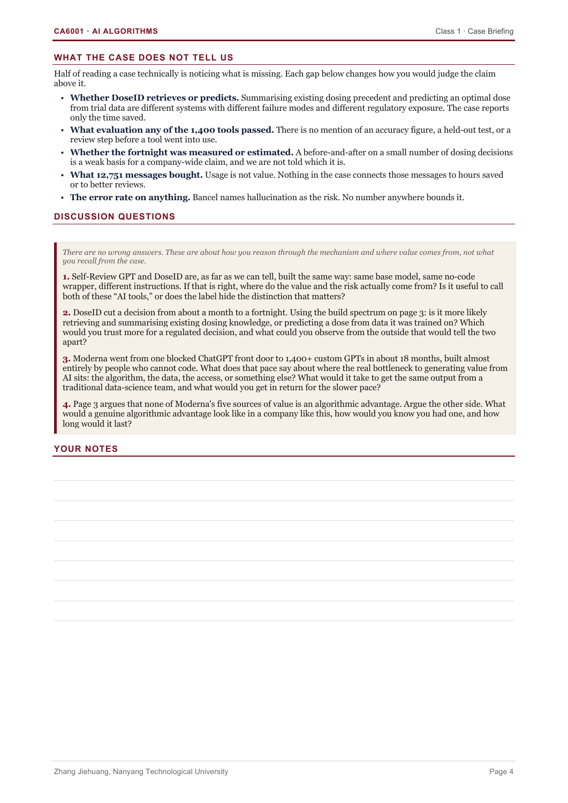
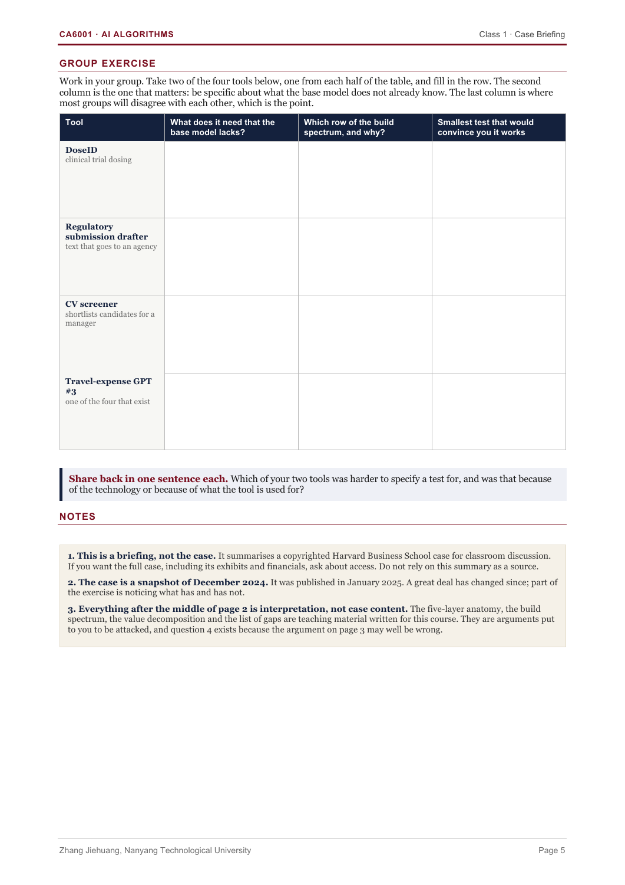

第一周：监督与无监督学习
先分清输入、标签和预测，再用房价、邮件分类与客户分群理解不同学习任务；从损失、过拟合和评价指标，走到 Moderna 案例中的真实价值与证据。
来源：Dr Zhang Jiehuang，CA6001 Super & Unsupervised Learning.pdf（26 页），CA6001_Class1_Case_Briefing_Moderna_student_handout.pdf（5 页），以及 Week 7 Supervised and Unsupervised Learning.ipynb。页码按 PDF 页序；沿主课件主题顺序整理，额外解释标为学习补充或核对说明。
What is AI / ML and Data Science?
本章图表 / 方法：数据科学、人工智能与领域知识的关系（主课件第 5–8 页）。
数据科学的目标是用数据产生有用的认识或决策，产出可以是分析报告、仪表板，也可以是预测模型。机器学习让模型从数据中学习规律；深度学习是机器学习中的一类方法。AI 项目还需要领域知识：先判断要解决什么问题、数据能否反映问题，再选择算法。
| 概念 | 用房屋案例理解 | 别混淆 |
|---|---|---|
| Feature / X | 面积、房龄、卧室数量等已知属性 | 输入特征不应包含待预测的房价 |
| Target / y | 历史记录中已知的真实售价 | 标签是观测记录，不是模型预测 |
| Prediction / ŷ | 模型根据房屋属性估出的售价 | 预测可以与真实标签不同 |
| Parameter | 训练得到的权重 w 与截距 b | 不是直接从数据表复制来的列 |
| Training / Inference | 根据已知样本学参数 / 用参数处理新输入 | 预测新样本时通常不重新训练 |
一行通常代表一个样本，一列代表一个属性。例如 1000 套房屋、5 个输入特征：X 的形状为 (1000, 5)，y 为 (1000,)。先明确每一行的含义，才能解释模型学到的关系。
Supervised Learning: Overview and Examples
本章图表 / 方法：带标签的数据、回归与分类、欺诈识别（第 9–15 页）。
监督学习用成对的 输入 X 与已知目标 y 学习映射。标签可以来自测量、人工标注或业务记录，其质量决定模型能学到什么；“ground truth”不意味着记录一定没有错误。
| 任务 | 输入 | 输出目标 | 如何判断 |
|---|---|---|---|
| 回归 Regression | 面积、房龄、房间数 | 连续房价 | 回答“多少”，用 RMSE、MAE、R² 等评价 |
| 分类 Classification | 邮件长度、可疑词频 | 垃圾 / 正常邮件 | 回答“哪一类”，用混淆矩阵及分类指标评价 |
| 分类：欺诈检测 | 交易金额、位置、行为特征 | 欺诈 / 非欺诈 | 少数类标签稀缺，需关注漏报和误报 |
金融欺诈案例强调领域规则可以产生初步特征和弱标签。但规则生成的标签会继承规则的盲点，不能把规则命中直接当作已确认欺诈。应使用独立核验样本检查模型是否真正发现新模式。
Linear Regression & Mathematical Model
本章图表 / 方法：房价散点图、最佳拟合直线、平方误差（第 11–12、16 页）。


单特征线性回归：ŷ = wx + b。w 是直线斜率，b 是截距；给定面积 x，模型输出预测价格 ŷ。多特征时：ŷ = w₁x₁ + … + wₚxₚ + b。
例如学习补充中的房价单位为“千元”、面积单位为 m²，w=3、b=20：面积 80 的预测价格是 260 千元；真实价格若为 280，残差 y−ŷ=20 千元，平方误差为 400（千元）²。
课件的优化目标是平均平方误差。常见记法 MSE = (1/m) Σᵢ(ŷᵢ−yᵢ)²；也常写 J = (1/2m) Σᵢ(ŷᵢ−yᵢ)²，多出的 1/2 方便求导，不改变最小值的位置。残差有正有负，不能直接相加作为好坏标准。
import numpy as np x = np.array([50., 80., 100.]) # 面积：m² y = np.array([180., 280., 300.]) # 真实价格：千元 w, b = 3., 20. prediction = w * x + b # [170, 260, 320] residual = y - prediction # [10, 20, -20] mse = np.mean(residual ** 2) rmse = np.sqrt(mse) print(prediction, mse, rmse) # MSE=300；RMSE≈17.32 千元
学习补充：梯度下降用损失对参数的梯度更新 w、b，例如 w ← w−α∂J/∂w。这里“直线的斜率 w”和“损失对 w 的梯度”是不同概念。输入原始特征可以有非线性变换；线性回归中的“线性”重点指对参数线性。
模型能说什么，不能说什么
系数表示其他特征不变时，某一特征增加一个单位对应的预测变化。不同单位的原始系数不能直接比较“重要性”，也不能直接证明因果。检查残差是否有规律、误差方差是否变化、样本是否相互依赖，以及严重共线性；对传统置信区间和显著性检验，还需关注相应误差假设。
Logistic Regression & Classification
本章图表 / 方法：sigmoid、概率阈值与邮件决策边界（第 13–14 页）。
逻辑回归虽然名字有“回归”，这里用于二分类。先算线性分数 z = wᵀx+b，再用 p = 1/(1+exp(−z)) 得到属于正类的概率估计，最后按阈值输出类别。
| 步骤 | 例子 | 含义 |
|---|---|---|
| 线性分数 z | z=0 | 尚不是概率 |
| sigmoid(z) | p=0.5 | 两类分界附近；z 越大，正类估计概率越高 |
| 应用阈值 τ | 约定 p≥0.5 判为 1 | 阈值等号归属应写清楚；原 Notebook 用的是 p>0.5 |


调低正类阈值通常会找到更多正例，同时带来更多误报。应在验证集依据业务代价选阈值，再用独立测试集评价，不能反复看测试结果挑最好的阈值。
import numpy as np z = np.array([-2., 0., 2.]) probability = 1 / (1 + np.exp(-z)) labels = (probability >= 0.5).astype(int) print(probability.round(3)) # [0.119, 0.500, 0.881] print(labels) # [0, 1, 1]
Unsupervised Learning: Overview and Examples
本章图表 / 方法：客户分群、聚类与关联（第 17–20 页）。
无监督学习没有事先指定的目标标签，主要从输入数据中发现结构，例如把行为相似的客户聚成组，或寻找经常一起购买的商品组合。聚类编号是算法产出的分组，不是自动找到了原本隐藏的正确标签。
| 分群维度 | 课件例子 | 使用前要确认 |
|---|---|---|
| Geographic | 国家、城市、邮编 | 空间位置如何表示相似性 |
| Demographic | 年龄、收入、职业等 | 量纲、代表性与使用目的 |
| Behavioral | 购买品类、消费高峰、购买时间 | 统计窗口一致，避免未来行为混入 |
| Psychological | 偏好、态度、信念等 | 测量是否可靠、缺失是否有系统性 |
聚类关注“哪些样本相似”；关联关注“哪些事件经常共同发生”。购买关联不自动代表因果，也不等于一个完整推荐系统。
| 比较 | 监督学习 | 无监督学习 |
|---|---|---|
| 训练数据 | X 与对应 y | 主要是 X，没有指定目标 y |
| 目的 | 预测已定义目标 | 寻找结构、分组或表示 |
| 常见任务 | 回归、分类 | 聚类、关联 |
| 评价 | 预测与真实目标比较 | 结构质量、稳定性、领域解释与下游用途 |
只有少量标签怎么办？
第 20 页是开放讨论。学习补充的思路包括：优先标注高价值样本（主动学习）、结合少量标签与大量无标签样本（半监督学习）、使用已有表征（迁移学习）、借助领域规则生成弱标签。每种方法都需要验证；伪标签错误可能被反复放大，数据少也不代表监督学习一定不可用。
Overfitting vs Underfitting
本章图表 / 方法：高偏差与高方差对比图（第 21–22 页）。


| 现象 | 训练表现 / 验证表现 | 可尝试的方向 |
|---|---|---|
| Underfitting 欠拟合 | 通常两者都差 | 改善特征、增加适度复杂度、检查训练是否充分 |
| Overfitting 过拟合 | 训练好，未见数据差 | 正则化、简化模型、增加有代表性的数据、验证超参数 |
| 适度拟合 | 两者都较好且差距合理 | 继续检查独立测试与新场景表现 |
模型复杂度不是越高越好，也不是训练损失越低就越能泛化。Bias / Variance 在这里指统计学习中的偏差与方差，与 CA6003 中对群体不公平的数据偏差相关但不是同一个定义。
训练和验证都差还可能来自数据错误、训练没有收敛或任务不可预测；仅凭一张曲线不能证明唯一原因。课件第 22 页是算法选择示意图：先判断目标是分类、回归、聚类还是降维，再根据样本与数据性质选择候选算法；流程图不能代替验证集比较。
Learning Evaluation｜划分、指标与 ROC-AUC
本章图表 / 方法：训练 / 验证 / 测试、交叉验证、混淆矩阵与 ROC（第 22–24 页）。
先划分，再训练。训练集学参数，验证集选模型、超参数和阈值，测试集留到方案确定后做最终评价。课件叙述先谈损失收敛再谈划分，不代表可以先用全部数据训练后才划测试集。
K-fold 将训练数据拆为 K 份，轮流用 K−1 份训练、一份验证，汇总均值与波动。编码、填补、缩放和特征筛选也必须在每个训练折内部拟合。时间序列要尊重时间顺序，同一人的多条记录要考虑按人分组；随机 K-fold 不是万能选择。
| 指标 | 公式 / 意义 | 注意 |
|---|---|---|
| RMSE | sqrt(mean((y−ŷ)²)) | 与目标同单位，大误差受到更强惩罚 |
| MAE | mean(|y−ŷ|) | 平均绝对误差，同样与目标同单位 |
| R² | 1−Σ(y−ŷ)²/Σ(y−ȳ)² | 可以小于 0；不是分类准确率，目标恒定时需特殊处理 |
分类：先定正类，再读四种结果
| 真实 / 预测 | 预测负类 0 | 预测正类 1 |
|---|---|---|
| 真实负类 0 | TN：正确排除 | FP：误报 |
| 真实正类 1 | FN：漏报 | TP：命中 |
| 指标 | 公式 | 用“流失为正类”解释 |
|---|---|---|
| Accuracy | (TP+TN)/N | 所有客户中预测正确的比例 |
| Precision | TP/(TP+FP) | 预测会流失的人，有多少真的流失 |
| Recall / TPR | TP/(TP+FN) | 实际流失的人，找回了多少 |
| F1 | 2PR/(P+R) | Precision 与 Recall 的调和平均 |
| FPR | FP/(FP+TN) | 实际未流失的人，被误报多少 |
学习补充：若 TN=80、FP=10、FN=5、TP=5，则 Accuracy=85%，但正类 Recall 只有 50%、Precision≈33.3%、F1=40%。总体准确率高，不代表少数正类识别得好；分母为零时需明确处理方式。


AUC 汇总排序能力，接近 1 表示正例通常排在负例前；约 0.5 接近随机排序。它不提供单个阈值的误报数量，也不证明概率校准良好。用概率或连续得分计算 ROC-AUC，不要先变成 0/1 再假装拥有完整排序信息。
from sklearn.metrics import confusion_matrix, precision_score, recall_score, f1_score y_true = [0] * 90 + [1] * 10 y_pred = [0] * 80 + [1] * 10 + [0] * 5 + [1] * 5 print(confusion_matrix(y_true, y_pred, labels=[0, 1])) print(precision_score(y_true, y_pred)) # 1/3 print(recall_score(y_true, y_pred)) # 0.5 print(f1_score(y_true, y_pred)) # 0.4
Class 1 Case｜Moderna: Democratizing AI
本章图表 / 方法：Moderna 课堂简报、五层结构、四种构建方式与讨论题（案例第 1–5 页）。
这份简报讨论：当很多员工都能配置 AI 工具时，价值来自模型本身，还是资料、流程位置与使用方式？Self-Review GPT 帮助撰写绩效自评，DoseID 辅助剂量相关流程；相同基础模型用于不同任务，错误后果可能完全不同。
来源边界：简报描述的是 2024 年 12 月的案例快照；从第 2 页中段起，技术分层与价值分析属于老师的解释框架，并非已经证实的 Moderna 内部实现。本页不将历史人员、使用量或效率数字当作当前事实，也不把“节省时间”当作临床有效性的证明。
| 层 | 做什么 | 能说明什么 |
|---|---|---|
| Base model | 提供通用语言能力 | 多个工具可能复用同一套权重 |
| System prompt | 规定任务范围、语气、格式与边界 | 改变指令不等于训练新模型 |
| Retrieval | 检索相关资料并加入回答上下文 | 资料质量、权限和更新影响回答 |
| Actions | 调用其他系统查询或写入 | 需要明确权限、校验和操作记录 |
| Enterprise wrapper | 身份验证、日志、系统接入等 | 组织层面的控制也是产品的一部分 |
| 构建方式 | 改变什么 | 需验证什么 |
|---|---|---|
| Prompt configuration | 指令，通常不改权重 | 在不同输入下是否稳定遵守任务 |
| Retrieval augmentation | 回答时提供的上下文 | 能否检索正确版本、引用是否支持答案 |
| Fine-tuning | 用样本更新模型权重 | 是否在独立任务样本上改善，不能只看训练损失 |
| Purpose-built model | 针对具体目标训练模型 | 数据、目标、泛化与业务效果是否成立 |
老师提出五种价值来源：Access（能否使用）、Context（能看到什么资料）、Placement（嵌入哪一步流程）、Adoption（是否被采用）、Judgment（该用在哪里）。这是待辩论的观点，不是“算法能力永远没有价值”的结论。自评工具的使用次数也不直接等于节省工时或评价更公平。
查看四道讨论题原页


| 原题 | 解析路径 | 判断标准与误区 |
|---|---|---|
| 1 同一基础模型，价值和风险来自哪里？ | 对比两种工具的输入、输出用途、决策人和失败代价 | 不要只因都叫 GPT 就视为同一种风险；区分模型能力与流程 |
| 2 DoseID 是检索总结还是预测剂量？ | 列出两种机制分别需要的数据与可观察证据 | 时间缩短不足以识别技术机制，不能猜测其真实实现 |
| 3 快速扩散说明瓶颈在哪里？ | 比较配置工具的成本与传统建模的数据、验证成本 | “容易创建”不等于“已经可靠”；讨论采用速度与评估能力 |
| 4 反驳“没有算法优势” | 提出专有预测任务、独特数据和可比较的独立评价 | 必须说明相同数据 / 资源下的增益，而非只报模型大小 |


测试思路：资料问答可检查来源版本、引用支持度和找不到答案时的处理；人员筛选需检查标准一致性、漏筛误筛与群体差异；文本起草需检查事实、必填信息和人工审核。高风险专业决策的验证还需要相应专家参与。这里提供分析路径，不替小组填出唯一答案。
Notebook｜房价预测与客户流失
本章图表 / 方法：Week 7 Supervised and Unsupervised Learning.ipynb 的两项练习及选做题。
配套文件名写 Week 7，首行写 SC1304；其主题与本次 Chapter 1 对应，因此作为练习引用，不据文件名改动本课程周次。正文包含两个监督学习练习，没有完整的无监督实验。本次保留原 Notebook 和你的作答，只更新网站导读。
| 题目 | 数据与任务 | 完成标准 |
|---|---|---|
| Exercise 1 房价 | 1000 个模拟样本，面积、卧室、浴室、房龄、距学校距离 → 连续房价 | 70/30 划分；训练线性回归；对照预测与真实值；计算 RMSE / R²；解释系数和假设 |
| Exercise 2 流失 | 1000 个模拟客户，月费、合同月数、流量、客服来电、年龄 → 流失 0/1 | 先看类别比例；分层划分；训练逻辑回归；报告 P/R/F1 与混淆矩阵；讨论不平衡 |
| Optional Exercise 3 | 任选一个任务，构造至少三个新特征并比较另一个模型 | 统一划分与评价尺度；训练内交叉验证；解释选择与实际结果，不事先宣布改进 |
数据 → 模型 → 预测 → 评价
# 方法参考：df 为房价练习生成的表，不代替原题指标分析。
from sklearn.model_selection import train_test_split
from sklearn.linear_model import LinearRegression
X = df.drop(columns=["price"])
y = df["price"]
X_train, X_test, y_train, y_test = train_test_split(
X, y, test_size=0.3, random_state=42)
model = LinearRegression()
model.fit(X_train, y_train)
y_pred = model.predict(X_test)
print(X_train.shape, X_test.shape) # 原练习为 (700, 5)、(300, 5)Notebook 房价作答当前先定义 Y，后面划分却传入 y；Python 区分大小写，可能报未定义，也可能误用旧单元的 y。网站参考代码统一用小写 y，原文件中的作答不在本次直接改动。
流失练习的标签由模拟概率是否大于 0.5 直接生成，不是按概率随机抽样。这会形成由输入决定的边界，不能把在此得到的好成绩推广为真实客户效果。分类单元会重写 df，继续房价练习前要确认 df 仍是哪张表。
# 方法参考：先划分，再让 Pipeline 在训练集内拟合缩放器。
from sklearn.model_selection import train_test_split
from sklearn.pipeline import make_pipeline
from sklearn.preprocessing import StandardScaler
from sklearn.linear_model import LogisticRegression
X = df.drop(columns=["churned"])
y = df["churned"]
X_train, X_test, y_train, y_test = train_test_split(
X, y, test_size=0.3, random_state=42, stratify=y)
model = make_pipeline(StandardScaler(), LogisticRegression(max_iter=1000))
model.fit(X_train, y_train)
probability = model.predict_proba(X_test)[:, 1]
y_pred = (probability >= 0.5).astype(int)
print(probability[:5], y_pred[:5])stratify=y 让两份数据的类别比例大致一致；max_iter 是优化迭代上限，不保证任何数据都收敛；predict_proba 输出每个类别的概率列，本题标签 0/1 时第 1 列对应正类。若调整类别权重或阈值，须报告其对误报和漏报的影响。
第一周自测与第二周衔接
本章图表 / 方法：概念辨析与一项自主练习。
掌握标准：能区分回归、分类与聚类；解释标签、概率和预测类别；手算平方误差与混淆矩阵指标；说明过拟合为何需要未见数据检查；把 Moderna 工具拆成资料、模型与流程，并指出缺少什么验证证据。
第二周转向强化学习：不再仅从固定的输入—标签对预测，而是讨论动作如何改变后续状态，以及怎样通过奖励学习长期决策。